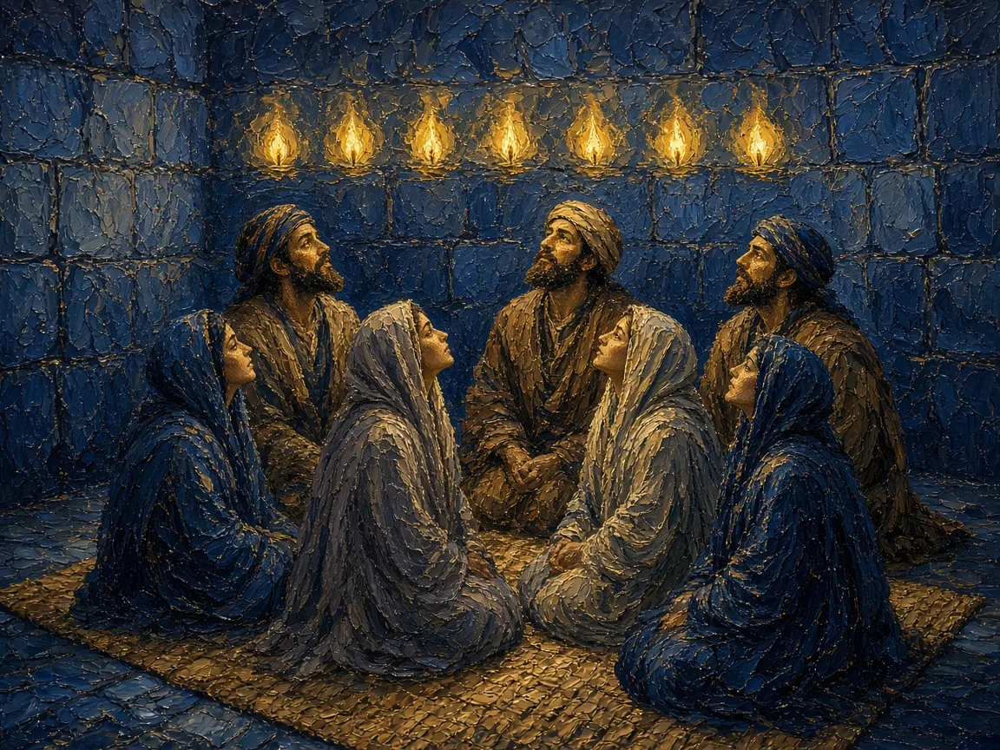
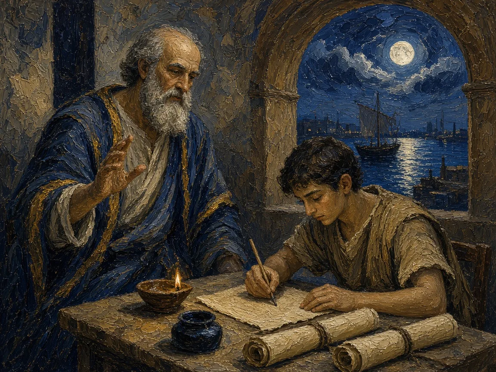
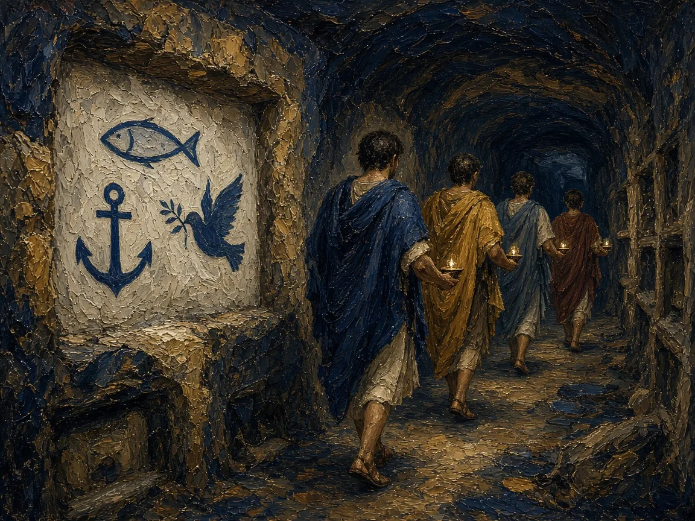
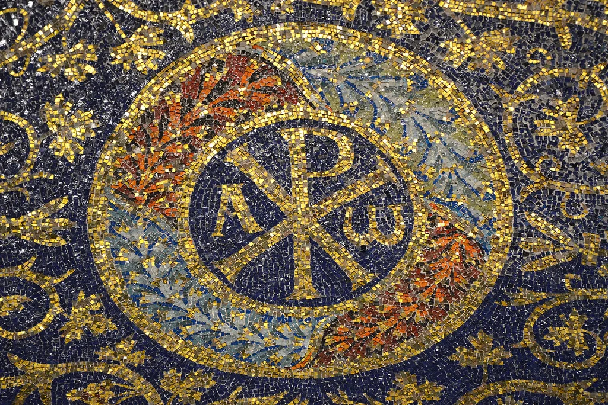

DAY 2 · CLASSROOM LECTURE 3 OF 6
Pentecost, Paul, Gentiles, community, persecution, Constantine and imperial change
REL 210 · Chapter 11
Jesus' earliest followers worship in Jerusalem and proclaim his resurrection.
Paul and other missionaries establish communities across the eastern Mediterranean.
The Temple's destruction and other changes reshape Jewish and Christian communal identities.
Church networks expand, develop offices, and negotiate Roman power.
There was no single day on which Christianity simply 'stopped being Jewish'.
Jesus' first followers formed a community in Jerusalem and proclaimed his resurrection.
Missionaries carried the message to new cities, where Jewish and Gentile believers formed local communities.
Watch for: What helped a movement rooted in Jerusalem take hold in other cities?
At the Jewish festival of Shavuot: wind, fire, and inspired speech.
Peter announces Jesus’s resurrection and calls listeners to repentance and baptism.
Teaching, prayer, shared meals, mutual aid, and “breaking bread.”

AI-generated image: the disciples, women and men, at Pentecost (Acts 2)
Often called the “birthday of the Church,” though Jesus’s followers still understood themselves as Jews.

AI-generated image: Paul dictating a letter to a scribe (see Romans 16:22)
Paul believed Israel’s promises were opening to the nations, not that he was abandoning Israel’s God.
The separation was gradual, uneven, and contested.
Later Christian anti-Judaism turned family arguments into harmful stereotypes and persecution; Christianity’s Jewish roots must remain visible.
Greek “overseer,” the source of the English word “bishop” (and of “Episcopal”). Presbyteros, “elder,” gives us “priest” and “Presbyterian.”
The oftener we are mown down by you, the more in number we grow; the blood of Christians is seed.
Tertullian, Apology 50 (c. 197)

AI-generated image: Christians in a Roman catacomb, with the early symbols of fish, anchor, and dove
No single cause explains expansion across the Roman world.
Roads, ports, common languages, and urban travel connected house churches.
Congregations crossed some ethnic, gender, and social boundaries.
Members supported the sick, poor, widowed, imprisoned, and displaced.
Resurrection and eternal life offered meaning amid suffering and death.
Growth came through ordinary relationships and resilient communities as much as through famous missionaries.
Christianity was never exclusively European.
First kingdom to adopt Christianity officially, traditionally dated to 301.
The kingdom of Aksum embraced Christianity in the fourth century.
Ancient Syriac Christian communities developed along trade routes.
Byzantine missions encouraged vernacular scripture and worship.
A multicentered religion: Rome and Constantinople were major centers—but never the whole Christian world.
Constantine and the Christianization of the Roman Empire

Chi-Rho with alpha and omega in an early Christian mosaic; image from the original deck
A monogram of the Greek letters chi (X) and rho (P), the first two letters of Christos. Lactantius describes it as the sign on Constantine’s shields.
REL 210 · Chapter 11
From vulnerable minority to legally protected, then imperially privileged Christianity.
Bishops and councils gain public influence and resources.
Doctrinal disputes become matters of public and sometimes imperial order.
Scripture, worship, baptism, and claims about Jesus remain central.
Distinguish Constantine's toleration (313) from official Nicene establishment under Theodosius I (380).
LECTURE 3 · PIERIAN SPRING
The 35-minute classroom lecture ends here. All following slides are assigned independent study for Lecture 3: From Jewish Movement to Imperial Church.
PIERIAN SPRING · REQUIRED INDEPENDENT STUDY
Luke 8:1–3 and the Passion narratives portray women as disciples, supporters, and witnesses.
Paul refers to Prisca, Phoebe, and Junia in Romans 16.
Early communities developed ministries, patronage networks, teaching, and leadership in different settings.
Compare the evidence for women's activity with later restrictions in some Christian communities.
The earliest church was not composed solely of the Twelve or male bishops.
PIERIAN SPRING · REQUIRED INDEPENDENT STUDY
Jesus' first followers continued in Jewish religious life while admitting Gentile believers.
The question was whether Gentile converts must adopt the full obligations associated with Jewish covenant identity.
Acts 15 narrates a compromise; Paul's Galatians 2 reflects his own perspective on related disputes.
The Gentile mission allowed Christianity to develop communities beyond Israel without demanding full conversion to Judaism.
Compare Acts 15 and Galatians 2 as different sources for the early Gentile controversy.
PIERIAN SPRING · REQUIRED INDEPENDENT STUDY
Christians met in homes, shared meals, prayed, taught, and offered material support.
Local patrons and households provided space and linked social networks.
Surviving sites, including Dura-Europos, illustrate adapted spaces for Christian worship.
The basilica became a prominent form for larger public Christian worship and episcopal ceremony.
A change of building also signals changing social position, resources, and ritual scale.
PIERIAN SPRING · REQUIRED INDEPENDENT STUDY
Roads, shipping lanes, cities, and a common Greek-language world supported long-distance exchange.
Households, kinship ties, merchants, migrants, and patronage formed durable networks.
Christianity developed in Syria, Egypt, North Africa, Armenia, Ethiopia, and farther east.
Persecution was intermittent and varied by region and ruler before the fourth century.
The growth of Christianity had no single cause and was never confined to western Europe.
PIERIAN SPRING · REQUIRED INDEPENDENT STUDY
In what ways did the earliest Jesus movement remain part of Judaism?
How do Acts 15 and Galatians 2 illuminate an early dispute?
What can Romans 16 tell us about household networks and women's activity?
What happened when some Christian congregations moved from houses to basilicas?
Study check: explain the examples, not only the terminology. Return to earlier slides when needed.
→ / Space: Next slide
← : Previous slide
Tab / Shift+Tab: Move between pop-up terms and links
Enter / Space on a dotted term: Open its pop-up
S: Speaker notes
F: Fullscreen
O: Overview
ESC: Close an open pop-up (otherwise toggles the overview)